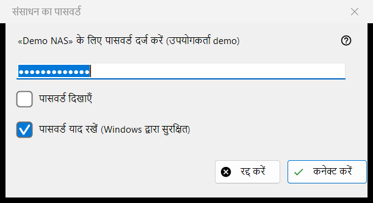
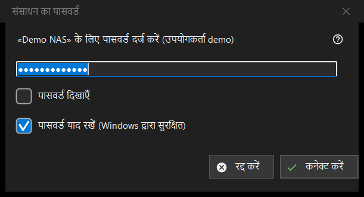

संसाधन का पासवर्ड
यह किस लिए है
सहेजे गए सर्वर या नेटवर्क फ़ोल्डर का पासवर्ड माँगता है। यह तब खुलता है जब आप ऐसा संसाधन खोलते हैं जिसका पासवर्ड सहेजा नहीं है, जब सहेजा हुआ पासवर्ड अस्वीकार हो जाता है, जब सर्वर पर गंतव्य फ़ोल्डर या किसी आयात को पासवर्ड चाहिए, और PIN से सुरक्षित फ़ोल्डर के लिए संसाधन का PIN शीर्षक के साथ।


इस क्रम में
- पासवर्ड टाइप करें; वह छिपा रहता है, और पासवर्ड दिखाएँ उसे दिखा देता है।
- तय करें कि पासवर्ड याद रखें (Windows द्वारा सुरक्षित) पर निशान लगा रहने दें या नहीं।
- कनेक्ट करें (Enter) दबाएँ, या रोकने के लिए रद्द करें (Esc)।
तत्व
पासवर्ड
संकेत में संसाधन और उपयोगकर्ता का नाम होता है। पासवर्ड ठीक वैसा ही लिया जाता है जैसा टाइप किया गया, स्पेस सहित। खाली फ़ील्ड पर यह संदेश मिलता है: पासवर्ड दर्ज करें। पासवर्ड दिखाएँ विकल्प शुरू में बंद रहता है।
पासवर्ड याद रखें
यह बॉक्स डिफ़ॉल्ट रूप से चुना होता है। चुना हो तो पासवर्ड Windows द्वारा आपके खाते के लिए एन्क्रिप्ट करके सहेजा जाता है, और केवल तब जब कनेक्शन उसे सही साबित कर दे; न चुना हो तो वह केवल मौजूदा रन के लिए मेमोरी में रहता है। यह बॉक्स वहाँ छिपा रहता है जहाँ पासवर्ड वैसे भी सहेजा जाता है, जैसे सेटिंग फ़ाइल आयात करते समय, और PIN मोड में।
अस्वीकार किया गया पासवर्ड
यदि सर्वर ने पिछला पासवर्ड अस्वीकार किया, तो विंडो फिर पूछती है और एक पंक्ति दिखाती है: पासवर्ड स्वीकार नहीं हुआ। उसे फिर से दर्ज करें।
PIN मोड
PIN से सुरक्षित फ़ोल्डर के लिए शीर्षक संसाधन का PIN होता है और संकेत नामित संसाधन का PIN माँगता है। याद रखने का बॉक्स नहीं होता, और अस्वीकार हुए PIN पर यह संदेश मिलता है: PIN अस्वीकृत हुआ। इसे फिर दर्ज करें।